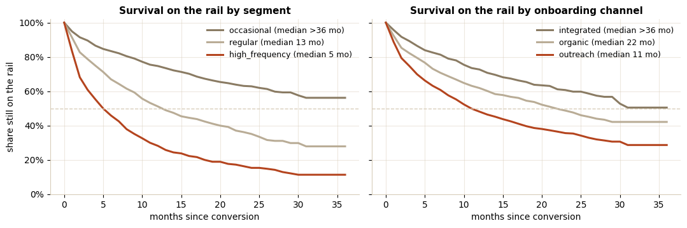
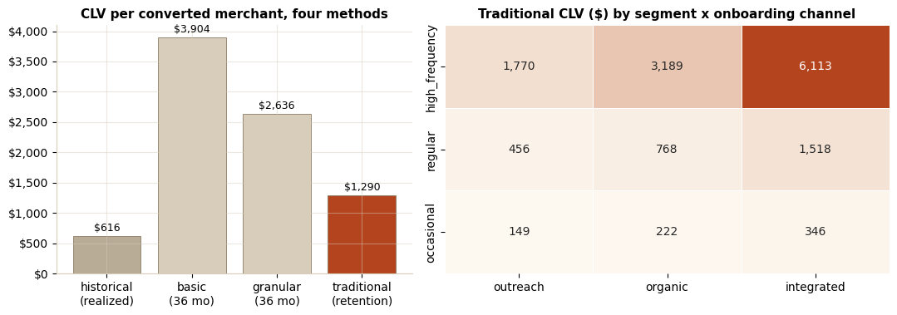
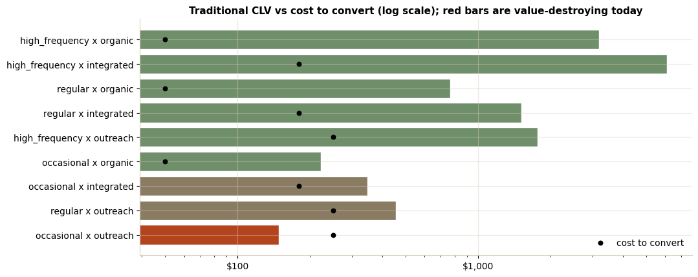

Case study · Notebook
Customer lifetime value for a check-to-virtual-card program
A payments program converts merchants from check and ACH (automated clearing house) onto a virtual card rail and earns interchange on every settled payment. The retention study answered whether the program works; this one prices it: how long a converted merchant stays on the rail, what a convert is worth, and the most each onboarding channel should spend converting one. The answer changed where outreach dollars go.
The notebook
The analysis, step by step
Step 1: how long do we keep them on the rail?
Conversion-month cohorts, the retention matrix, and its heatmap set the base, but cohort curves alone punish young cohorts for being young. A product-limit (Kaplan-Meier) estimate handles the censoring and collapses thirty-six cohorts into one honest curve per segment and per onboarding channel. The reads: high_frequency merchants settle the most and leave the fastest (interchange cost compounds weekly), integrated converts barely leave at all, and the two 2024 outreach-campaign cohorts sit visibly below their neighbors in the heatmap.
product-limit survival in twelve lines: censoring handled, no library needed
def km_curve(dur, churned, horizon=37):
surv, out = 1.0, [1.0]
for t in range(1, horizon):
at_risk = (dur >= t).sum() # reached month t enrolled
events = ((dur == t) & churned).sum()
if at_risk > 0:
surv *= 1 - events / at_risk
out.append(surv)
return np.array(out)
# dur: months on the rail; censored merchants get the anchor date,
# churned merchants get their reversion month

Step 2: CLV four ways, disagreeing on purpose
Four estimates of the same quantity, each hiding a different assumption. Historical sums what a merchant has actually delivered: a floor, blind to tenure. Basic and granular multiply an average month by an assumed 36-month lifespan: optimistic by construction, since the survival curve says half the converts are gone by month 19. The traditional formula replaces the assumed lifespan with observed loyalty, retention over churn, and is the one fit for spend decisions on a rail where reversion is effectively final. Two base choices matter more than the arithmetic: revenue per enrolled month (occasional merchants keep the rail but skip months), and month-over-month retention estimated from every at-risk month rather than an average over the cumulative cohort matrix.
| Method | Estimate | The assumption it hides |
|---|---|---|
| historical | $616 mean, $105 median | realized only; a three-month-old convert looks cheap |
| basic | $3,904 | every merchant lives 36 months |
| granular | $2,636 | same lifespan; unweighted per-payment mean |
| traditional | $1,290 | churn is definitive; under-reports at low retention |
traditional CLV per cell: hazard from at-risk months, revenue per enrolled month
def traditional_clv(g_merchants, g_pay):
at_risk = (g_merchants.dur + g_merchants.churned).sum() # at-risk merchant-months
hazard = g_merchants.churned.sum() / at_risk # monthly churn rate
retention = 1 - hazard
rev = g_pay.net_revenue.sum() / g_merchants.dur.clip(lower=1).sum()
return rev * retention / hazard # geometric-series lifetime

Step 3: the number the business acts on
CLV against fully loaded conversion cost per channel: outreach $250, integrated $180, organic $50. Nine segment-by-channel cells, one of them underwater. Paid outreach converting occasional merchants returns $149 of lifetime value against $250 of cost; the same labor pointed at high_frequency merchants returns 7x. The recommendation is routing, not heroics: move the occasional segment to self-serve enablement and spend outreach where the ceiling is high.

| Cell | CLV | Cost | CLV / cost | Payback |
|---|---|---|---|---|
| high_frequency × organic | $3,189 | $50 | 63.8x | <1 month |
| high_frequency × integrated | $6,113 | $180 | 34.0x | <1 month |
| regular × integrated | $1,518 | $180 | 8.4x | 4.1 months |
| regular × outreach | $456 | $250 | 1.8x | 5.7 months |
| occasional × outreach | $149 | $250 | 0.6x | underwater |
Step 4: from the average merchant to this merchant
Formulas price the average; operations wants a number per merchant. Recency, frequency, monetary (RFM) features over a trailing 12-month window, a December 2025 target month held out of the features entirely, and a 75/25 split. The linear model beats the free benchmark ("December equals November") by 17% on held-out RMSE (root mean squared error). MAPE is skipped deliberately: 40% of enrolled merchants settled nothing in the target month, and percentage error is undefined at zero. The statsmodels read then catches the trap worth a paragraph in any review: frequency and monetary correlate at 0.95, so the full model hands frequency a significant negative coefficient. Dropping the redundancy costs nothing in fit and returns coefficients a finance partner can read. The behavior-derived segment label stays out of the features for the same reason: it inflates R-squared to 0.70 while turning every honest coefficient statistically dead.
Source & data. The executed notebook and the synthetic dataset (segment-dependent churn hazards, the early-tenure hazard shock, channel and prior-rail effects, the 2024 campaign cohorts, and seasonality, all injected deterministically and documented in the generator) are on GitHub: notebooks/virtual_card_clv. The retention side of the same program: merchant retention case study.